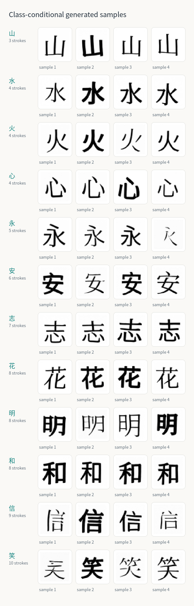
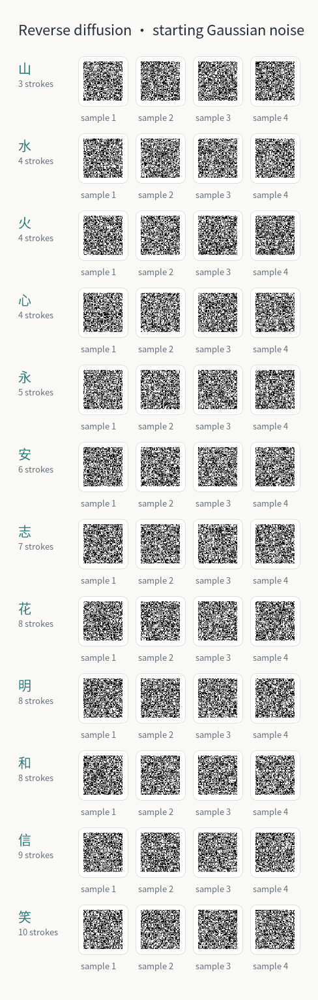
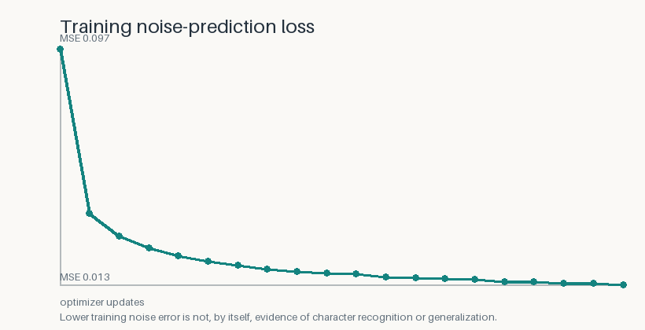
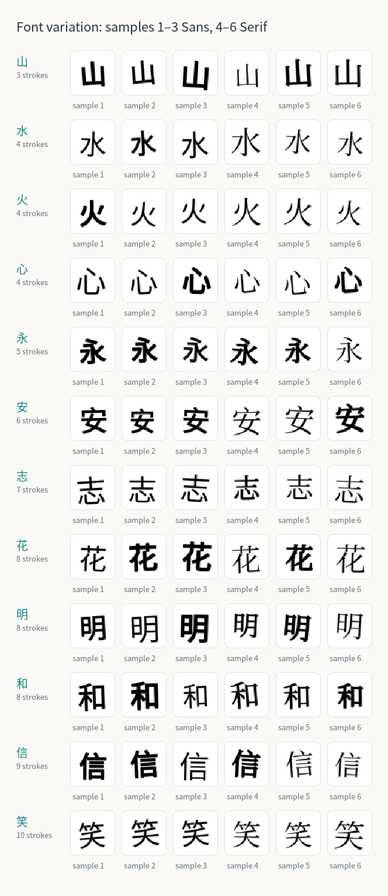

This run trains a small class-conditional diffusion model on rendered examples of 山 (3 strokes), 水 (4 strokes), 火 (4 strokes), 心 (4 strokes), 永 (5 strokes), 安 (6 strokes), 志 (7 strokes), 花 (8 strokes), 明 (8 strokes), 和 (8 strokes), 信 (9 strokes), 笑 (10 strokes). The samples below are model outputs from the saved checkpoint.
Generated samples

Each row is conditioned on one requested character. The grid is a qualitative pilot view; no recognition metric has been computed.
Reverse process

The animation shows selected states while the denoiser repeatedly predicts and removes noise.
Training and data

Training noise-prediction MSE is an optimization trace, not a validation score.

Training images were rendered locally from Noto Sans CJK SC Regular, Noto Serif CJK SC Regular. The fonts are used under the SIL Open Font License 1.1; see the dataset manifest for source URLs and hashes.